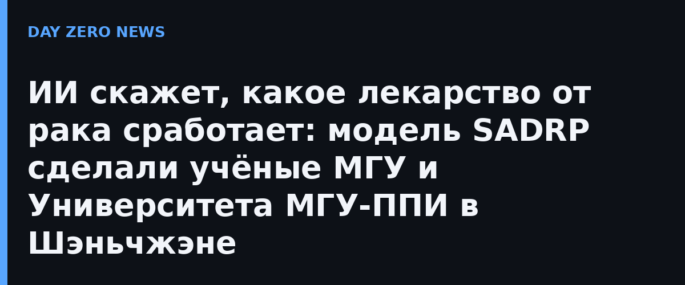

Один и тот же препарат может по-разному воздействовать на различные виды раковых клеток — и именно эту проблему берётся решать модель SADRP, о которой ТАСС рассказал профессор Дмитрий Шайтан, соруководитель совместной лаборатории биоинформатики и инженерной биологии МГУ-ППИ и кафедры биоинженерии биофака МГУ. Модель прогнозирует чувствительность клеточных линий к препаратам, которые применяют при раке молочной железы, толстой кишки, яичников, опухолей головы и шеи; в разработках лаборатории также значатся глиобластома и рак пищевода.
Как следует из статьи, SADRP (structurally aware multi-modal framework for drug response prediction) устроена как двухканальная система. Для representation лекарства она использует кодирование кратчайших путей в молекулярном графе и кодирование рёбер — то есть учитывает и топологию молекулы, и химию типов связей. Для характеристики опухолевой клетки многоракурсный интерактивный энкодер объединяет два слоя «омиксных» данных: экспрессию генов и метилирование ДНК. Такой подход позволяет ловить взаимодополняющие сигналы, которые каждый канал по отдельности теряет.
В PLOS Computational Biology (статья вышла 21 октября 2026 года, DOI 10.1371/journal.pcbi.1014861) авторы заявляют, что SADRP стабильно превосходит современные методы предсказания ответа на препараты — и заодно предлагает кандидатов на перепрофилирование лекарств и потенциальные биомаркеры с объяснением механизмов. Теперь команда готовит серию лабораторных экспериментов, чтобы проверить эффективность подсказанных моделью веществ на живых клетках.
Важно: пока модель работает на клеточных линиях, а не на пациентах — до клинического инструмента путь через эксперименты. Но сама задача (предсказать, поможет ли конкретная химия конкретной опухоли) — одна из главных в персонализированной онкологии: перебирать препараты эмпирически дорого и долго, а вычислительный фильтр мог бы сокращать этот перебор в разы. Хороший пример того, что на стыке ИИ и биологии Россия участвует не как догоняющая сторона, а как полноправный соавтор — с публикацией в сильном рецензируемом журнале.